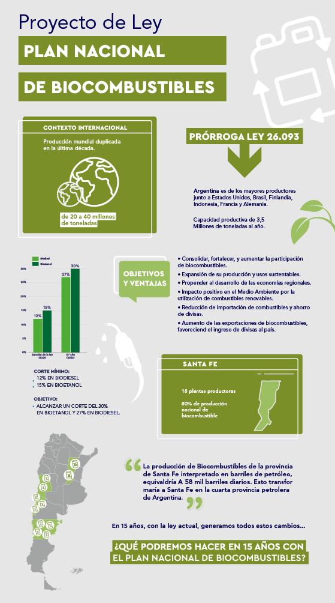
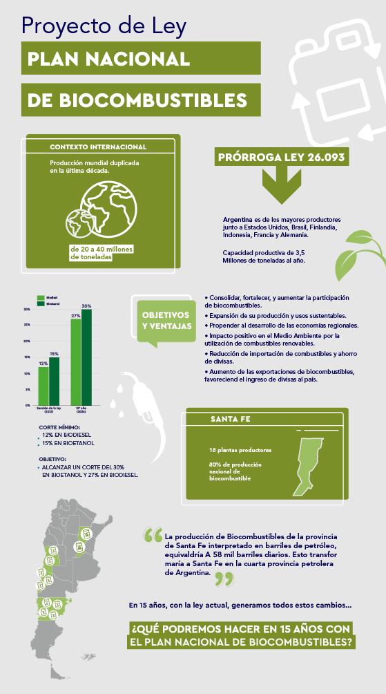
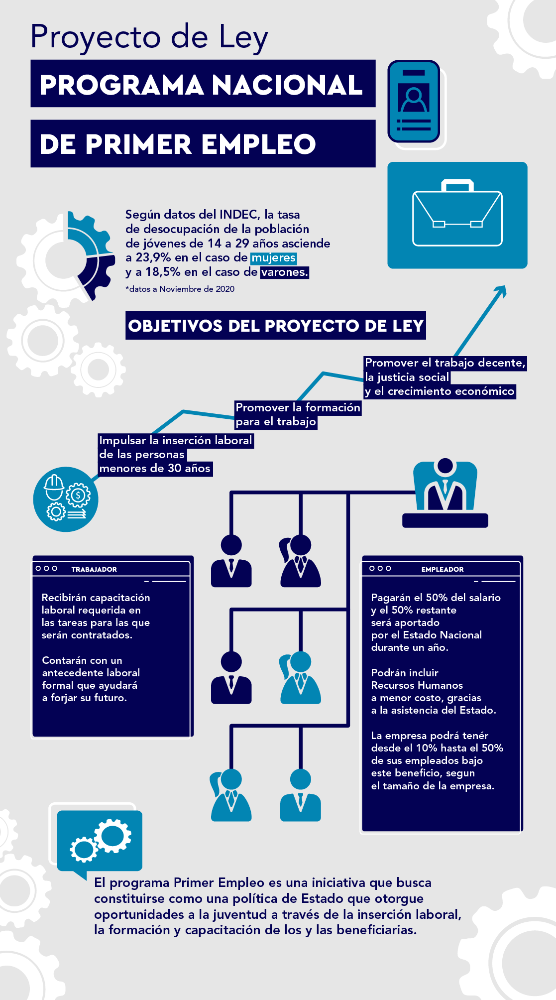

Bio-Combustible
Busca aumentar la participación de los biocombustibles en la matriz energética nacional, generar un desarrollo sustentable de las economías regionales y cuidar nuestro medio ambiente.

Busca aumentar la participación de los biocombustibles en la matriz energética nacional, generar un desarrollo sustentable de las economías regionales y cuidar nuestro medio ambiente.
Iniciativa que busca constituirse como una política de Estado, otorgando oportunidades a la juventud a través de la inserción laboral, la formación y capacitación de los y las beneficiarias.
